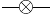
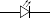
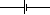

L'électricité
Thème 3 - Chapitre 2
Compétences et attendus prof
Attendus
- Mettre en évidence expérimentalement la possibilité d’intervertir les positions des composants d’un circuit à une boucle.
- Mettre en œuvre un circuit électrique à une boucle avec un convertisseur d’énergie (moteur, élément photovoltaïque, etc.).
- Mettre en œuvre un circuit électrique à une boucle avec un capteur (de température, d’éclairement, de mouvement, etc.).
- Donner une représentation schématique normalisée du circuit électrique réalisé.
- Rechercher des informations sur les règles de sécurité électrique et les prendre en compte dans son activité.
Compétences
Vérification des idées reçues
Combien de fils faut-il pour faire fonctionner une ampoule ?
- Note ton hypothèse
en faisant une phrase (Je pense qu'il faut…)
- Relie l'ampoule
avec le nombre de fils de l'hypothèse. Est-ce que ton hypothèse était correcte ? Qu'as-tu appris ?
Pour qu'un courant électrique puisse circuler dans un circuit, il faut qu'il forme qui relie du générateur.
- Représente la situation
par un schéma
- Notes personnelles
que je trouve importantes
Pourquoi cette idée ? pres
Cette idée reçue provient du fait qu'il n'y a qu'un seul fil pour brancher un objet chez soi…
Où dois se situer l'interrupteur pour couper l'alimentation ?
- Note ton hypothèse
en faisant une phrase (Je pense que l'interrupteur…)
- Branche l'interrupteur
entre la borne + et l'ampoule, puis entre l'ampoule et la borne − du générateur. Est-ce que ton hypothèse était correcte ? Qu'as tu appris ?
Dans un circuit à une boucle, il d'intervertir les composants.
- Représente la situation
par un schéma
- Notes personnelles
que je trouve importantes
Pourquoi cette idée ? pres
Généralement on pense que ce qui vient avant à une conséquence sur ce qui est après. Dans le cas de l'électricité, il suffit de couper la boucle n'importe où pour que le circuit et donc l'électricité soit coupée.
Représentation normalisée AD
Pour toute installation électrique, il faut établir un schéma qui permet de comprendre facilement son fonctionnement. Il ne tient pas compte de l'emplacement réel des composant mais de la position relative les uns par rapport aux autres.
Les symboles utilisés sont normalisés, c'est à dire qu'ils sont les mêmes pour tous les pays européens, et sont donc lisible par tous les électriciens.
- Question
Quel est l'intérêt d'avoir une représentation normalisée ?
- Pour représenter un moteur, un générateur, un ampèremètre1 ou un voltmètre2, on utilise un cercle qui entoure la première lettre en majuscule du composant.
- Une ampoule est représentée par une croix inscrite dans un cercle.
- Une pile est représentée par deux segments parallèles entre eux, un petit symbolisant la borne \(\ominus\), et un plus grand symbolisant la borne \(\oplus\)
- Une LED (diode électroluminescente) est représenté par un triangle et un segment parallèle à sa base, auquel on ajoute deux flèche pour indiqué qu'elle émet de la lumière
- Un interrupteur ouvert est représenté par un segment incliné par rapport aux fils de connexion qui ne se touchent pas
| Nom du composant | Symbole normalisé |
|---|---|
| Générateur | |
| Moteur | |
| Ampèremètre | |
| Voltmètre | |
|  | |
|  | |
|  | |
Pour représenter le schéma je dois suivre les étapes suivantes :
- J'ai représenté la boucle du circuit électrique par un rectangle
- J'ai représenté les éléments du circuit par leur symboles en les positionnant sur les côtés du circuits
- J'ai relié les éléments par des traits verticaux et horizontaux
- Moteur
- composant électrique qui permet de transformer de l'énergie électrique en énergie cinétique
- Dipôle
- nom générique d'un composant électrique
- Intensité de courant
- lié au déplacement de charges électriques dans un matériau
- Tension électrique
- correspond à la différence de niveaux d'énergie aux bornes d'un dipôle
- Représente par un schéma normalisé un montage associant une pile et deux ampoules.
- Un élève souhaite modéliser une voiture téléguidée avec des phares.
- Cite quels sont les quatre dipôles nécessaires pour créer cette voiture.
- Fais un schéma normalisé possible pour ce montage.
- Après validation du schéma par le professeur, fais le montage correspondant.
- En t'aidant du chapitre 1 :
- En quelles formes d'énergies est convertie l'énergie électrique en traversant l'ampoule ? Fais la chaîne énergétique correspondante.
- Même question pour le moteur.
- Matéo utilise une visseuse/dévisseuse pour pouvoir monter un meuble dans sa chambre, il se dit qu'il est possible de modéliser son fonctionnement par un schéma comprenant une pile, un interrupteur, une ampoule pour servir de témoin lumineux.
- Fais le schéma du montage.
- Après validation, teste le montage correspondant.
- Matéo aimerait pouvoir faire fonctionner le moteur dans le sens inverse, son professeur lui a appris qu'il suffit d'inverser les bornes du moteur. Fais un deuxième schéma qui permet d'inverser les bornes avec un interrupteur à trois positions.
Sécurité électrique
Pourquoi il ne faut pas toucher un appareil électrique avec les mains mouillées ?
Certaines installations électriques sont sans danger pour le corps humain, alors que d'autres peuvent blesser, par électrisation, voire tuer, par électrocution.
Comment reconnaïtre les installations électriques dangereuses et comment s'en protéger ?
Valeurs minimales de tension électrique présentant un risque
| Tension | |
|---|---|
| Condition sèches | 50 volts |
| Conditions mouillées | 25 volts |
Valeurs de la tension du secteur selon le pays
| Pays | France | États-Unis | Chine |
| Tension | 230 volts | 110 vols | 220 volts |